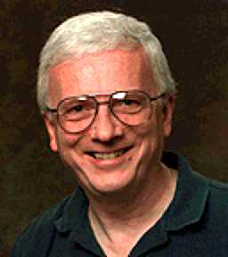

NuovoDoc System Architect
System architect Dennis Hamilton devotes his international-consultant energies to aggressively applying standards for interoperability and open integration in the design of electronic document systems.
The principal architect of Document Enabled Networking (DEN) at Xerox, Dennis was a leader in the technical merger of DEN and Shamrock under the AIIM Document Management Alliance (DMA). He provided architectural principles and the overall model for DMA system interoperability across and among enterprises. He is the current AIIM DMware Technical Coordinator and webmaster of the DMware Development Site.
Dennis has been developing software since 1958, contributing to standards for Algol, ASCII, Fortran, TIFF, ODMA, and DMA. Dennis is an Excelsior College graduate and a member of the ACM. His scholarly urges find expression in The Miser Project, an exploration at the foundations of computer science. Personal, family, and recreational avocations can be found under his orcmid pseudonym.
created 2001-04-04-17:49 -0700 (pdt) by orcmid
$$Author: Orcmid $
$$Date: 02-02-06 12:47 $
$$Revision: 9 $